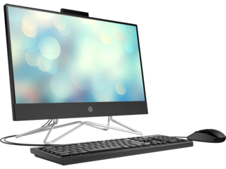

Entrega en este espacio una página que incluya al menos 6
características de todas las que hemos visto donde me escribas:
Opinion abierta
La unidad de aprendizaje de Computación me brindó una sólida base de conocimientos en el campo de la informática.
Durante mi experiencia estudiando esta materia, pude adquirir habilidades fundamentales en HTML y excel
El plan de estudios fue completo y abarcó tanto los aspectos teóricos como prácticos de la computación.
Uno de los aspectos positivos de esta unidad de aprendizaje fue la calidad de los docentes. La profesora estaba altamente capacitada
y demostraro un gran dominio de los temas, lo cual facilitó mi aprendizaje y comprensión de conceptos complejos. Además,
su disponibilidad y disposición para ayudar a los estudiantes crearon un ambiente de apoyo que fomentó un gran rendimiento en el proceso de aprendizaje.
Destaco también el enfoque práctico de la asignatura. A través de proyectos y ejercicios prácticos, tuve la oportunidad de aplicar los
conceptos teóricos aprendidos en clase. Esto contribuyó a consolidar mis conocimientos y fortalecer las habilidades necesarias para desenvolverme en el campo de la computación.
No obstante, considero que existen algunas áreas en las que se podrían realizar mejoras. En primer lugar, sería beneficioso
contar con un mayor énfasis en el aprendizaje de lenguajes de programación más utilizados en la industria, como Python o Java.
Esto me ayudaría a estar más preparado para el mundo laboral y a adaptarme más fácilmente a las demandas del mercado.
Aunque estoy conciente que solo enseñan lo básico y si quiero aprender a detalle estos aspectos, debería elegir la carrera tecnica.
Además, sería valioso incorporar prácticas de programación en equipo y proyectos de mayor alcance social. Esto me permitiría
desarrollar habilidades de colaboración y trabajo en equipo, que son esenciales en la industria de la computación.
En resumen, la unidad de aprendizaje de Computación en el CECYT 3 "Estanislao Ramírez Ruiz" me proporcionó una base sólida de
conocimientos en informática y contó con profesores capacitados. Sin embargo, considero que podrían realizarse mejoras
en la incorporación de lenguajes de programación utilizados en la industria y en la inclusión de proyectos más colaborativos y
relevantes para las tendencias actuales de la computación.
Click aquí -------------------->
Sosa Fierros Jonnathan Ellian 2IM11